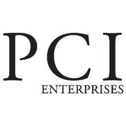

My ideal job would probably be art freelance work through commissions. The reason why I'd want to do this is because it opens the door to meeting new people and creating things more "me", instead of being confined to a company, even for only a few months. At least from what I've heard, the clients usually reach out the the commissioner and not the other way around, which means I don't really need to do the whole process of being interviews and waiting for a confirmation email/call, and I can work in my style because the clients are coming to me for my specific style. I would also say that I'm decent at replicating art styles as long as they're relatively simple. While doing commission work seems nice, I wouldn't mind doing this kind of work for a particular company, full-time job and all; it keeps some level of stability and is less unpredictable than going freelance.
TruePoint Communications - Graphic Designer
Link to TruePoint Communications Job Listing
- It's a paid internship, so I can very well take on this now or sometime soon; this might also mean they have internships open in the future. This job requires experience from a few programs that I know how to use, like: Canva and Microsoft Word, Excel, PowerPoint, and Teams. This job involves meeting new clients, so it would allow me to meet new people with different ideas. It also includes the intolerance to discrimination of any kind, which is nice to know.
PCI Enterprise - Graphic Design Intern
Link to PCI Enterprise Job Listing
- I think job would be good for me because they're looking for someone with knowledge in typography, compositions, color theory, layout, and use of negative space, which is well in my skillset. I can also digitally draw with some experience with Adobe programs. Aditionally, I do actually know how to do 2D animation, so that's a plus. The job also has benefits: 401(k), health insurance, 401(k) matching, vision insurance, and dental insurance.
FENG CHA - Graphic Designer
Link to FENG CHA Jobs (there's no option to directly link the specific job listing)
- First of all, I like FENG CHA. I'm pretty sure I've been to one at least 15 times this semester. Since I've been to 3 different locations, I have a fairly decent idea of what kind of vibe they're going for. The benefits are: dental insurance, health insurance, and paid time off. Additionally, free drinks!